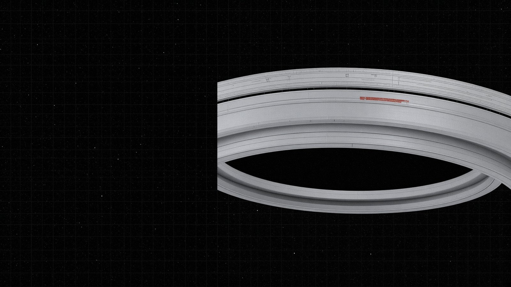
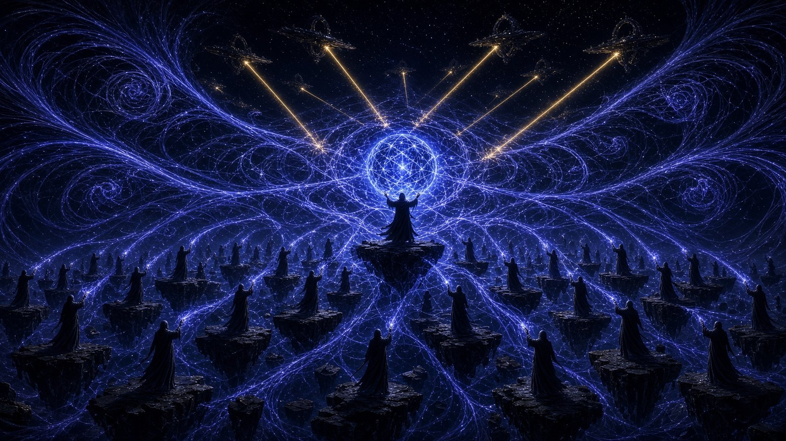
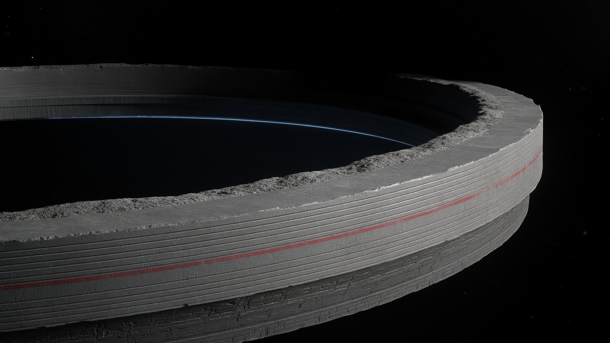
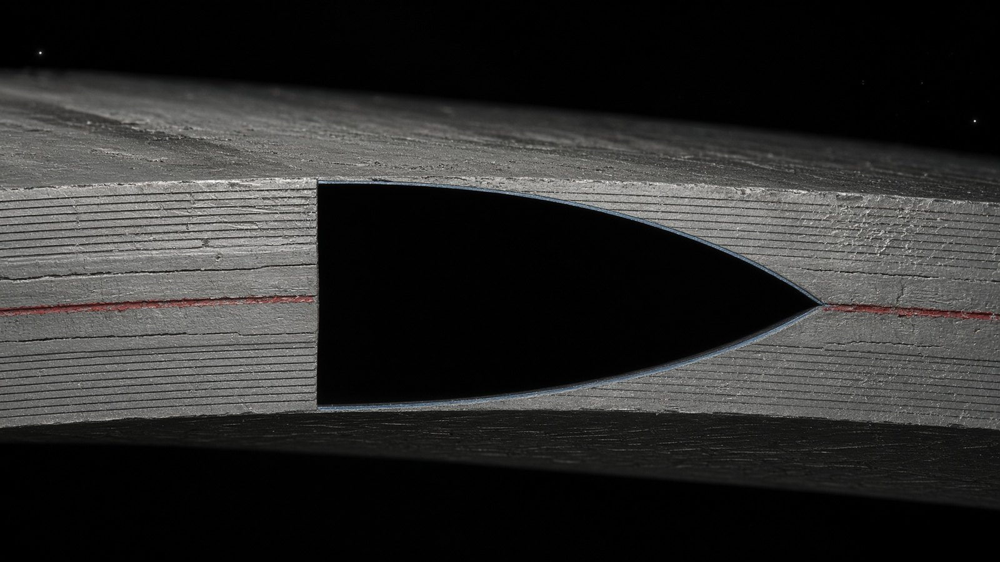
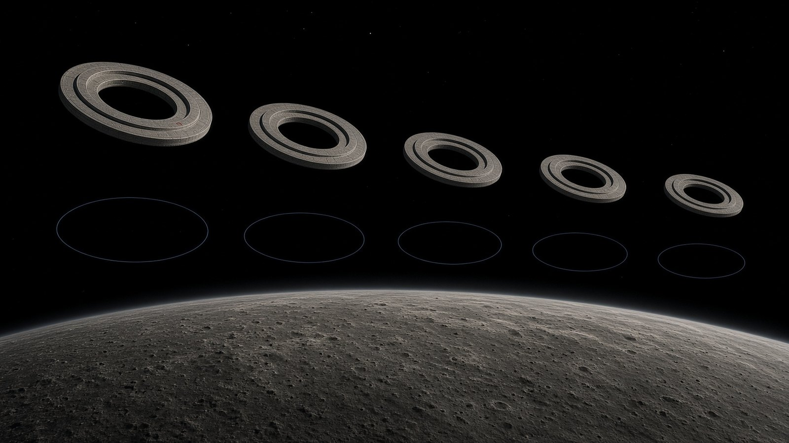
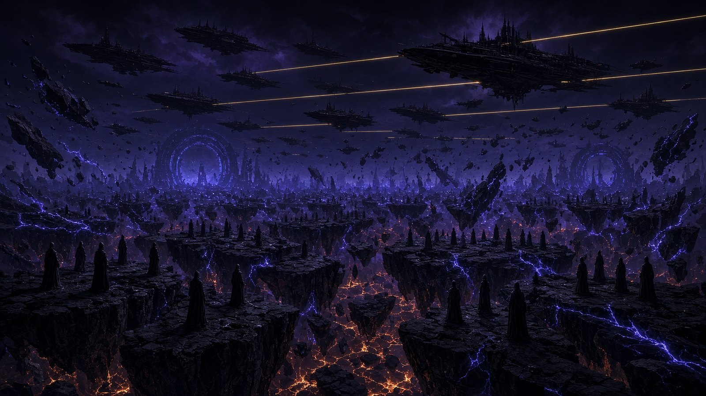
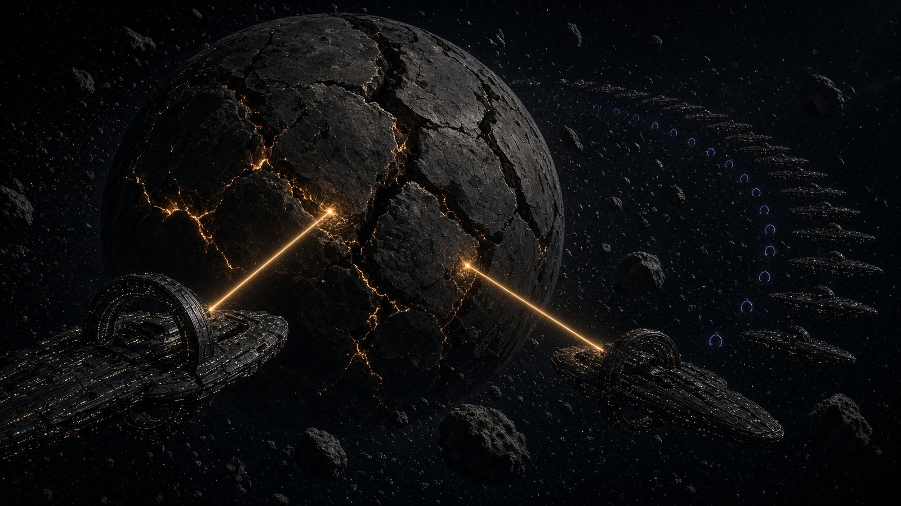
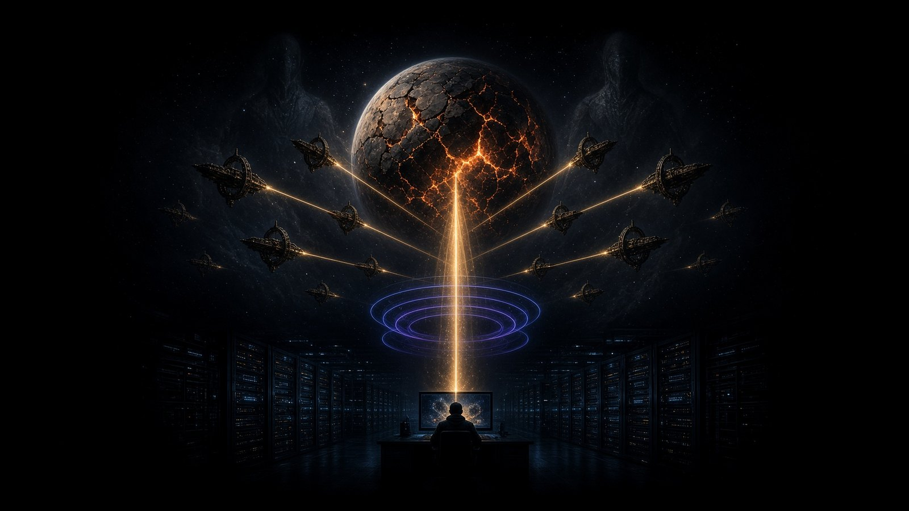

두 종족, 세 겹의 관문, 흩어지지 않는 0.4도.
문명 연작에 나오는 설정을 한자리에 모았습니다. 공개된 편에서 확인된 것만 적었고, 아직 읽지 않은 분이 봐도 이야기의 결말은 드러나지 않습니다.


치우와 르네는 이름부터 역설로 지어졌다. 치우는 전쟁의 신이지만 무기를 만들지 않는다. 르네는 문화의 신이지만 행성의 핵을 관통하는 것을 만든다.
한쪽이 정신을 쓰고 다른 쪽이 기술을 쓰는 것이 아니다. 두 종족 모두 감응과 축조를 함께 가지고 있었고, 종족 특성상 주력으로 삼은 쪽이 달랐을 뿐이다. 치우는 여럿이 동시에 느끼는 방식으로 판단하고, 르네는 여럿이 동시에 계산하는 방식으로 판단한다.

바깥이 정렬층, 가운데가 하중층, 안쪽이 도착층이다. 정렬층은 기준을 들고 있고, 하중층은 무게를 읽고, 도착층은 비어 있다.
안쪽이 비어 있는 것이 이 구조물의 정체다. 무기를 싣는 자리가 아니라 도착이 실현되는 자리이기 때문이다. 관문은 뚫리는 것이 아니라 열린다. 열릴 때 빛이 새지 않고, 테두리도 생기지 않는다. 같은 자리를 찍은 두 장면의 검정이 서로 다른 검정일 뿐이다.

르네는 문자를 쓰지 않는다. 표면에 새겨진 것은 글자가 아니라 선의 깊이와 간격이다. 그래서 그것을 읽으려면 다시 눌러봐야 한다. 같은 압력, 같은 각도, 같은 순서로.
누르는 것으로 적혀 있으니 누르는 것으로 읽어야 하고, 누르면 열린다. 만든 쪽은 그것을 숨기지 않았다. 저것을 읽을 줄 아는 자는 이미 저것을 열 자격이 있다고 보았을 것이다.

오차에는 성격이 있다. 같은 것을 열 번 재면 값이 열 개 나오고, 그 열 개는 어떤 중심을 둘러싸고 흩어진다. 중심을 찾는 것이 측량이다.
그런데 열 번을 재도 열 번 다 같은 쪽으로 같은 만큼 어긋나는 경우가 있다. 흩어지지 않는 오차는 오차가 아니다. 값이다. 그리고 값은 누가 넣은 것이다.

관문을 만들 줄 아는 종족이 엔진을 달 이유가 없다. 르네의 함선에는 배기도 항적도 없고, 앞뒤도 없다. 배가 아니라 떠 있는 구조물이기 때문이다.
이동한다는 것은 그들에게 그 공간에 기준을 세우는 일이다. 그래서 함대가 지나간 자리에는 항적이 아니라 격자가 남는다. 빛나지 않고, 그 선을 지나는 별빛이 아주 조금 밀려 있어서 선이 있다는 것만 알 수 있다.

행성은 폭발하지 않았다. 먼저 모든 소리가 사라졌다. 그다음, 대륙이 접혔다.
화구도 충격파도 없었다. 지각이 거대한 판으로 갈라지며 서로 멀어지고, 그 사이로 안쪽이 드러났을 뿐이다. 말데크는 지금 소행성대의 일부다. 푸른 돔 도시와 공명탑은 수많은 조각으로 나뉘어 어두운 궤도를 돌고 있다.

오천 년 전 누군가 굳은 가죽 한 장에 이 문장을 눌러 썼다. 그 문장은 마을이 옮겨 갈 때 함께 갔고, 다음 세대가 종이라고 부르는 것으로 옮겼고, 그다음 세대가 또 옮겼다. 옮길 때마다 눌러서 떴고, 옮길 때마다 한 글자씩 어긋났다.
수천 년 뒤 어느 교정자가 그 문장을 받게 된다. 그는 그것을 오식이라고 부를 것이다. 그리고 고치지 않을 것이다.